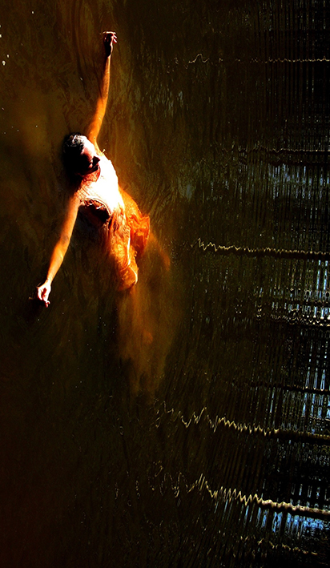

Which way up does this photo go?
Which ever way up you want
Is that you?
Yes
When?
Years ago. Your father took that
What were you doing?
Floating on the dam
Well, it goes up this way then, doesn't it
OK, that way then.
How did you float so well?
By taking a deep lung full of air, and keeping my head back, and relaxing. And this….this fat floats – and keeps you warm
Did you sink at all?
Yes. I went way down to the mud at the bottom ….. several times.
Was that scary?
It was funny and scary. It was mainly muddy and dark and cold….. icy. I saw some things that looked like they were frozen in ice.
What things?
Honey, fur, feathers, a screaming head, an axe, a loaded gun, legs running……
What else?
I could hear things. A pulse, a rhythm, a hum…. stories
Stories about what?
A man who loved death and let it trick him into devouring all his unborn children…….a woman who sliced stars in blood to release her memory's pain……a cow who milked a woman…. hair with two heads….. birds with teeth….an archer/arrow/prey all in one.
How did you breathe?
The water flowed through me….through my eyes and ears and nose…..I could still speak….. I couldn't always hear my voice…...other's could though….and I could hear them. I listened through the silent cries - deafening silences, but I needed air. So I climbed a light ladder back up to the surface.
What about this way up – you look like you were hanging by your feet.
Ah yes, the hanged woman….. it's all the same….
You look like you're stuck, like a bug in the jelly
Like a bug splattered on a windscreen…. Turn it….look. Now I'm looking down, hanging from the ceiling. Turn it….that's a good way…on the Rotor........glued to the wall......both in and out. A living specimen. Captured…... wondering how my dress got so wet.
What is that dress you're wearing?
A wedding dress –but not the one I was married in. Water everywhere. Did you know water has a memory? Every drop of water holds traces of the tears of a King. This is the right way up…..floating on the surface….looking at the sky…. comfortable.
Want to do something outside?
Yes, let's go climb in that tree, on the low limbs.
